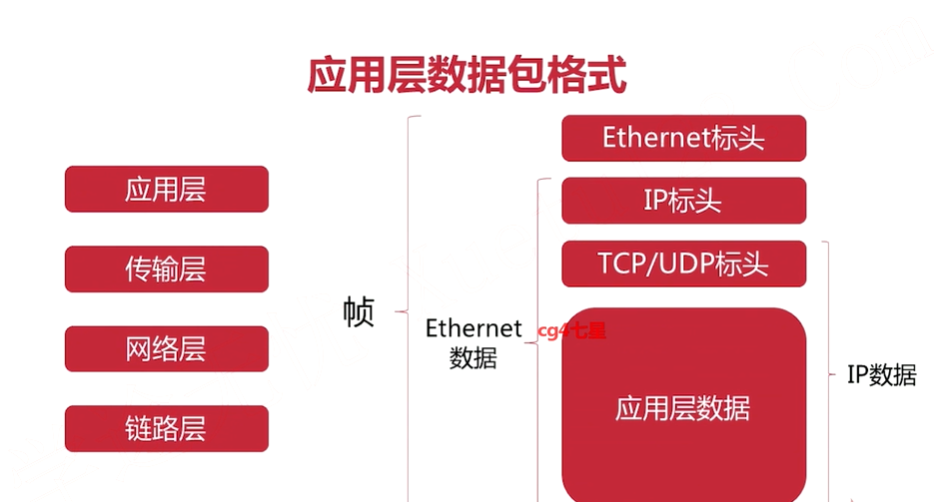
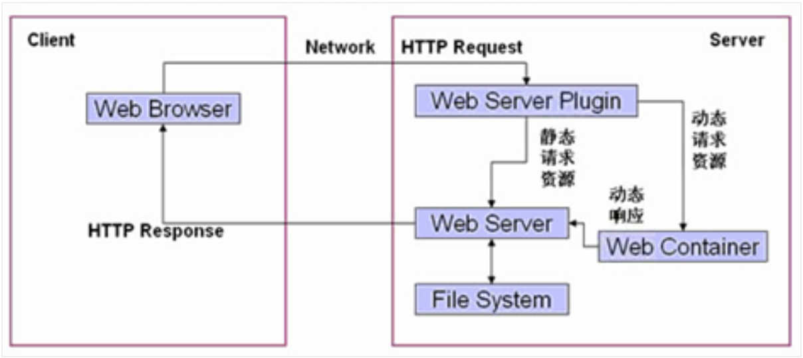

Java网络编程
更新日期:
url解析
当我们在浏览器内输入一段网址的时候,比如 http://www.google.com 进行访问的时候,真实发送出去的可能并非如此,可能是
http://www.google.com:80/search?q=test&safe=strict
协议 域名/IP地址 端口 路径 问号后为参数
DNS解析(Domain Name System)
如果我们要访问谷歌,只需要输入域名或者IP(这个一般没人会去做)就好了,但是谷歌是相当大的,不可能只有一台服务器,我们是怎么找到它其中一台服务器的哪?这就用到了DNS解析.即将输入的域名解析为IP地址.为了说清楚域名解析的过程,我们来看看域名都包含哪些东西:
www.google.com.
. 根域名
.com 顶级域名(还有.org .edu等)
.google 次级域名(这个就比较自由了,依照自己需要发挥)
此处没有三级域名 三级域名
www 主机名(根据需求可变比如:news.163.com)
DNS解析方法主要有两种:递归和迭代
大体方向:浏览器->dns客户端(本地程序)->各级DNS服务器
另外一个域名是可以对应一个或多个IP的
各级协议
真实网络层级分为5层(OSI七层是模型,因某些原因真实情况并不是7层):
应用层(用户所接触到的应用对数据处理格式)
传输层(端口到端口的连接,同一主机上有许多程序被分配了不同的端口)
网络层(主机到主机之间的联系,发送地到目的地)
数据链路层(网卡和网卡之间信息传输,关系到mac地址,传输信息采用广播这种比较原始的方法)
物理层(过于底层,真实的物理连接,电缆光缆等等)
分层思想(计组第一章内容)使得大家能够各司其职,在本层做出改动只要不影响向上一层的接口,那么对于上一层来说就没有影响。
每一层有每一层使用的协议(即数据组织格式),举例来说:
应用层协议: HTTP协议(传输网页内容) SMTP(收发邮件) FTP(文件传输) DNS(域名解析)
传输层协议: TCP协议(较为可靠,但是比较繁琐) UDP(不太可靠,相对简单)
网络层协议: IP协议(每个主机都有一个IP)
数据链路层协议: Ethernet协议 ARP(IP地址和mac地址转换)
物理层: 电信号(一般没人到这步吧….)
协议格式简述:
Web基础概念
软件架构
C/S类型:客户端/服务器端–> QQ,360客户端
B/S类型:浏览器/服务器端–> 各种网站资源分类
静态资源:所有用户访问时得到的结果都是一样的,静态资源可以直接被浏览器解析。比如:html,css,jpg等等
动态资源:不同用户访问得到的结果可能是不一样的,浏览器无法被浏览器直接解析,必须经过服务器端处理后转换为静态资源返回给浏览器才能解析。比如:php,asp,jsp等等
网络通信三要素
IP:计算机在网络中的唯一标识
端口:应用程序监听的端口在计算机中是唯一的
传输协议:规定了数据传输的格式,比如TCP,UDP,HTTP协议常见的web服务器
服务器:安装了服务器软件的计算机
服务器软件:接收用户的请求,处理请求做出回应
web服务器软件:tomcat,weblogic等等TCP协议和UDP协议的区别
TCP和UDP服务实现如下:
1
2
3
4
5
6
7
8
9
10
11
12
13
14
15
16
17
18
19
20
21
22
23
24
25
26
27
28
29
30
31
32
33
34
35TCP编程的服务器端一般步骤是：
1、创建一个socket，用函数socket()；
2、设置socket属性，用函数setsockopt(); * 可选
3、绑定IP地址、端口等信息到socket上，用函数bind();
4、开启监听，用函数listen()；
5、接收客户端上来的连接，用函数accept()；
6、收发数据，用函数send()和recv()，或者read()和write();
7、关闭网络连接；
8、关闭监听；
TCP编程的客户端一般步骤是：
1、创建一个socket，用函数socket()；
2、设置socket属性，用函数setsockopt();* 可选
3、绑定IP地址、端口等信息到socket上，用函数bind();* 可选
4、设置要连接的对方的IP地址和端口等属性；
5、连接服务器，用函数connect()；
6、收发数据，用函数send()和recv()，或者read()和write();
7、关闭网络连接；
与之对应的UDP编程步骤要简单许多，分别如下：
UDP编程的服务器端一般步骤是：
1、创建一个socket，用函数socket()；
2、设置socket属性，用函数setsockopt();* 可选
3、绑定IP地址、端口等信息到socket上，用函数bind();
4、循环接收数据，用函数recvfrom();
5、关闭网络连接；
UDP编程的客户端一般步骤是：
1、创建一个socket，用函数socket()；
2、设置socket属性，用函数setsockopt();* 可选
3、绑定IP地址、端口等信息到socket上，用函数bind();* 可选
4、设置对方的IP地址和端口等属性;
5、发送数据，用函数sendto();
6、关闭网络连接；